Interface
Performance and Edit Modes
RMS Keyboards® has two basic modes of operation: Performance and Edit. As the names suggest, you use one when performing and the other when editing. Editing should be done outside of full orchestra or cast rehearsals to keep elements locked and prevent accidental changes.
As shown below, the Mode menu tells you which mode is active and allows you to toggle between the two:
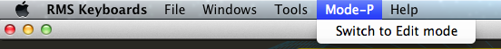
You can make small changes, such as adjusting a volume setting, when in Performance mode, but these will save only when you're in Edit mode.
Monitor Window
The Monitor window is a basic representation of a keyboard. It shows MIDI data for the active keyboard as the program receives it. (Only one keyboard window is active at a time: see under "Keyboard Window" below.)
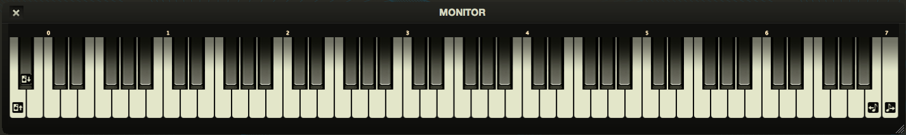
The Monitor window also shows the four icons for the hotkey assignments within the range of a typical 88-key controller:
- = Previous setup
 = Next setup
= Next setup- = Previous song
- = Next song
Songs Window
The Songs window lists all the songs for the currently installed show. You can click on a song name to jump to that song within RMS Keyboards®. If you wish to rename a song, simply double-click on the name and type in a new one.
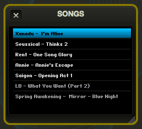
Switch to Edit mode and you'll be able to edit the song list in the following ways:
- Remove: Highlight any song and click 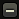 to delete it.
- Add: Highlight any song, then click to bring up a new Song Select window that lets you choose any other song in the show to insert at the highlighted location.
- Duplicate: Highlight any song and click to duplicate it.
- Reorder: Drag and drop the songs in the list to customize the order.
In addition to using hotkeys to switch songs, you can also use the Page Up and Page Down keys to switch the currently loaded song.
RMS Keyboards® loads groups of instruments, or "setups," organized by song.
Keyboard Windows
A single RMS Keyboards® installation will have as many different keyboards as there are books for that show. For example, JOSEPH calls for Keyboard 1, Keyboard 2 and PianoSynth; and ALTAR BOYZ calls for Piano-Conductor and Keyboard 2. Each will appear in a separate Keyboard window.
Only one Keyboard window may be active at any given time. It will have an orange title, as seen below. The active keyboard will have its MIDI input and hotkeys mirrored in the Monitor window, and will be the keyboard that is played by the assigned MIDI controller. If each keyboard has a unique MIDI controller, then changing the active Keyboard window will affect only what is shown in the Monitor window.
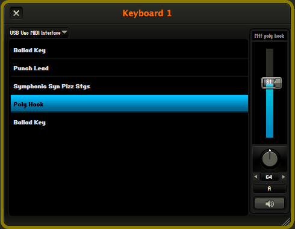
The left pane of the Keyboard window will show the list of setups for the current song, in the order that they appear in the score. Each setup will have a name that closely resembles the name in the score, though you may change the name to something more to your liking by double clicking on it in Edit mode (see next section).
You can advance through setups by using either the Next/Previous Setup hotkeys or the up/down arrow keys on your computer (for the active Keyboard window). If you have the Cycle through songs option selected under Preferences (Tools > Preferences > General), clicking Next Setup or Previous Setup will automatically change songs when you get to the last (or first) setup in a list.
The right pane of the Keyboard window shows channel strips for each patch within a specific setup. Each patch has its own volume slider, L-R panning knob, output channel selector and mute/unmute button.
The volume sliders have a range of 0-200%, with 100% being the default volume level for patches.
Panning knobs have a range of 0-127, with 64 being center.
Note: Changes made in these channel strips apply to the current setup only, unless you are global edit mode.
Global Edits in the Keyboard Window
Switching to Edit mode reveals, at the upper left of each Keyboard window, a special editing feature—the Global Edit button (). To activate global editing, click on the button so that it turns orange: . This will allow you to make sweeping changes to all setups within the current keyboard. Use this for:
- Setting an entire Keyboard to route through a different channel in the Output Mixer (useful for external mixing of multiple instruments with your audio hardware), or
- Adjusting the volume or panning of an entire Keyboard.
- Adjusting the volume of a specific patch for the entire show
To protect you from making accidental global edits, you'll see the following screen the first time you change a specific parameter while in Global Edit mode:
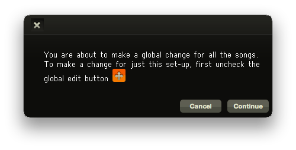
When you use Global Edit mode to adjust the volume of a specific instrument, RMS Keyboards will similarly adjust that instrument across the entire show. So if you'd like your celeste patch to be louder overall, simply adjust the fader to your liking within Global Edit mode, and it will apply throughout.
Global Edits only apply to the selected keyboard, so you won't accidently change the mix for your keyboard 2 if you are editing within the keyboard 1 window.
Please note that these edits are absolute, not relative - so if you have set a lower volume for a celeste patch on a particular song, that will be over-ridden by making a Global Edit to celeste in any song. Be sure to test all your patches before a performance if you are making global edits.
To leave Global Edit mode, click/toggle .
Using Edit Mode in the Keyboard Window
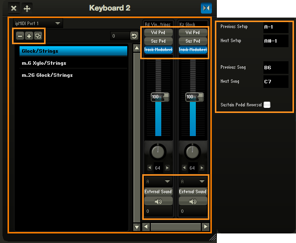
In Edit mode, you can reorder setups by clicking and dragging on a single setup name. If you double-click on a setup you can rename it.
Other fields display the hotkey assignments for Previous/Next Setup and Previous/Next Song. You can change these hotkeys here by clicking on an adjacent field value (A-1, B6, etc. ) and playing the desired note on the keyboard, or by typing the value into the field.
There is also a checkbox labeled Sustain Pedal Reversal. Occasionally, depending on the manufacturer, the pedal may seem to be working backwards (that is, it sustains when not pressed, but cuts off when pressed.) If this happens, simply check this box to reverse the pedal's behavior.
In Edit mode you can customize the setup list to your heart's content. The three buttons that appear directly above the setup list have the same functions as for the Songs window discussed earlier. Using these you can:
- Remove: Highlight any setup and click to remove it.
- Add: Highlight any setup, then click to bring up a new Setup Select window that lets you choose any other setup in the show to insert at the highlighted location.
- Duplicate: Highlight any setup and click to duplicate it.
You can also reorder the setups in the list simply by using drag-and-drop.
Very important: if you are going to change to the setup list, you should create a clean version of your show using File > Save As before making any edits. This will make it easier to back out of any edits you may later regret.
When you click , a Setup Select dialogue box appears that allows you to choose the specific show, song, keyboard and setup you would like to insert into the list:
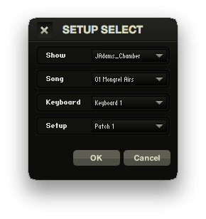
With this, you can create customized keyboards parts that pull together setups from any song or keyboard part within your show.
Also, in Edit mode, some additional buttons will appear on the channel strip. These help you govern how each instrument layer in your setup responds to specific MIDI signals.
Near the top, above the fader strip, you'll see these four buttons:
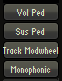
Vol Ped: Typically, all instrument layers will respond the same way to volume messages (usually CC7). But this may not always be what you want. For example, your setup might have the top half of the keyboard playing strings while the bottom plays electric bass. Now suppose there’s a section of music that’s scored with a big crescendo for the strings only. The Vol Ped button allows you to perform the string swell while maintaining a steady bass level. If you click the Vol Ped button for the bass, it will turn blue with a strike through: Now that layer will ignore volume controller information, allowing for sophisticated dynamic control.
Sus Ped: This is similar to the Vol Ped button, but relates to sustain (CC64). Usually, all layers are meant to respond to the sustain. But imagine a setup defined to play a drone pad with layered brass accents. It might be convenient to hold the drone with the sustain pedal, while still performing a staccato effect for the brass. When clicked (), the Sus Ped button lets you tell the brass channel to ignore sustain.
Track Modwheel: Some instruments will have a defined modwheel response, such as tremolo or vibrato. The showfile will contain a preset value for these instruments that you can change in performance. But when you click the Track Modwheel button, RMS Keyboards® will first look to the position of the physical modwheel for its initial setting, rather than to the showfile.
Monophonic: When this is engaged, the instrument will only play one note at a time. This can be useful for synth lead lines.
Remember: Clicking on any of these four buttons (turning them blue with a strikethrough) means that you're telling the software to ignore MIDI signals for a given instrument layer.
Near the bottom of the channel strip, above and below the Mute/Unmute button, you'll see buttons for the Configure External Sound window and the Transpositions pop-up menu:
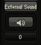
Naturally enough, clicking the Configure External Sound button brings up the Configure External Sound window. This lets you route any instrument to an external device outside of the RMS Sampler soundset used by RMS Keyboards®. With this feature, you can take advantage of your personal electronic music library. For example, if you'd like to use your own violin sound instead of ours, you could integrate it into the RMS Keyboards® performance while retaining all the sophisticated mapping, layering, triggering, and transposing associated with the part. This is explained in greater detail in the following section.
The Transpositions pop-up menu allows you to transpose the corresponding instrument channel. This too is explained in greater detail below.
Configure External Sound Window
The Configure External Sound window lets you route the selected instrument channel to any device in your personal collection.
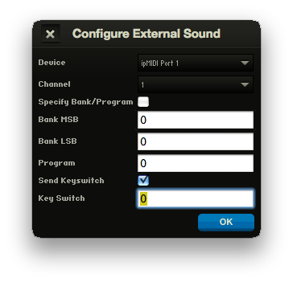
Note: this is an advanced feature intended for users with an excellent understanding of their personal devices, especially the way they handle MIDI patch-change messages.
The feature will work with devices that are physically separated from the computer running RMS Keyboards® such as external synthesizers, sound modules, or additional computers that are hosting virtual instruments. If these devices are connected to your computer through Core Audio (on OS X systems) or through individual device drivers (on Windows systems), they will be accessible to the Configure External Sound window.
First, use the Device pop-up menu to select your external device. You can then use the Channel pop-up menu to define the channel through which the particular patch's MIDI signal will be routed. You can use a given channel only once per setup per keyboard -- so if you plan to use one external device simultaneously for many sounds over multiple Keyboard windows, you will need to plan carefully so that you don't run into channel conflicts.
Most MIDI instruments handle patch changes through a combination of one or more of the following messages:
- CC 0 (MSB) - bank select message
- CC 32 (LSB) - bank select message
- a specific patch (program) number between 0 and 127
- a keyswitch, a MIDI note-on/off event(s)
If Specify Bank/Program is checked, the corresponding message will be sent to the external device when the setup is selected. Note: if your device does not use either MSB or LSB messages, enter 0 in that field.
If Send Keyswitch is checked, the corresponding MIDI note will be sent to the external device when the setup is selected. You can define the MIDI note either by typing the value or by placing your cursor in the field and then hitting a note on your MIDI keyboard.
Some devices don't handle patch-change messages very well. The Roland JV1080, for example, can take a full half-second before it processes the message. In these cases, you can preset the device's patches on the corresponding channels and then leave the checkboxes in the Configure External Sound window unchecked. RMS Keyboards® will route the MIDI signal accordingly without sending any patch-change message.
Transpositions Menu
Transpositions can happen in three places:
- Song
- Setup
- Instrument channel
In all cases, you can transpose in a range extending from -12 to +12, with each increment of 1 representing a half step and "0" (zero) meaning no transposition:
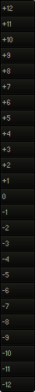
The full sweep allows you to transpose an octave in either direction. The transposition affects the output. As a very basic example, if you set a transposition of -2 and then play a C major scale, you will hear a Bb major scale.
Most of the time, you will probably just want to transpose at the song level (usually to help a singer who may not have the right vocal range.) But there may be reasons to drill down and approach it at the setup or instrument level. For example:
- One or more setups, or instrument layers, may be defined to a non-pitched instrument, such as a drum kit. You probably would want to exclude these setups from any transposition.
- The underlying programming may contain sound effects whose pitch should not be altered.
The song, setup, and instrument transpositions are added together to produce the final transposition values. By carefully adjusting the various settings, you can handle any transposition situation.
To create a transposition, select the Songs window or a Keyboard window. In Edit mode,
- Song Transposition is located in the Songs window, on the right side above the song list.
- Setup Transposition is located in the Keyboard window, on the right side above the setup list.
- Instrument Transposition is located in the Keyboard window, underneath the speaker icon of each instrument channel.
Once finished with all your edits and customizations, you can change back to Performance mode (Mode > Switch to Performance Mode) to lock your settings.
Output Mixer Window
The Output Mixer window lets you adjust the instrument volume routed to specific channels, as well as the level of reverb assigned to each channel. These settings are saved per song, allowing you to pre-set volume levels and reverb settings on a song-by-song basis.
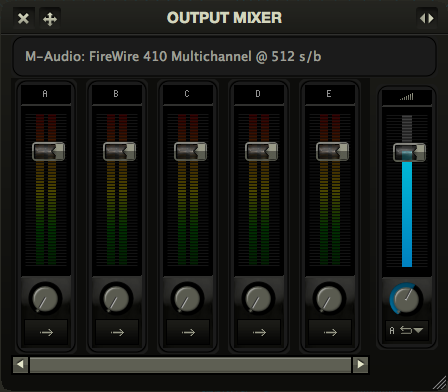
Note: These settings are not global by default. Adjustments made to these faders and knobs apply to the current song only, unless you are in Global Edit mode.
The number of available channels depends on your individual sound equipment. If you are playing through your computer's default internal sound card, you probably will see a single output Port A, corresponding to a basic stereo signal. A more sophisticated sound card or external audio interface may offer more output options. For the purposes of this documentation, we imagine a RMS Keyboards® is implemented with an 8 channels (4 stereo pairs) device.
Ports A-D each have a separate volume fader, as well as a Reverb Send knob. To the far right is a blue Master Volume fader and a Reverb Return knob. Reverb Send determines how much of the signal passing through a specific channel gets sent to the reverb engine, and Reverb Return determines the overall level of reverb present in the mix.
A note about reverb: to minimize the CPU requirements of RMS Keyboards®, we only allow reverb to return on a single port. You can specify the reverb return port by using the drop-down menu underneath the global volume fader. Keep in mind that you can always add your own external FX processing, including reverb, to the audio signal after it leaves RMS Keyboards®.
Every setup in every instrument defaults to port A, which corresponds to the main output on your audio device. RMS Keyboards® gives you a lot of control over how you route your audio. If you want to send all of Keyboard 1 to port A, all of Keyboard 2 to port B, and so forth, you can do that. If, instead, you would like to send all string patches to A (with a lot of reverb), all piano patches to B (with light reverb), and everything else to C (with no reverb), you can do that too.
Above the channel strips is a label indicating your current audio output device and buffer size. You can change your audio device and buffer size through the Setup Wizard (Tools > Setup Wizard) or by adjusting your Preferences (Tools > Preferences...).
Global Edits in the Output Mixer
By activating the Global Edit icon on the Output Mixer, you can adjust the volume faders and reverb settings for every song in the show. You will receive a warning screen on first adjustment to prevent any accidental changes while in Global Edit mode.
Note: Changing the volume or reverb settings while in Global Edit mode is absolute, not relative. Setting the volume slider to 60 in Global Edit mode, for example, will change the volume of that port for every song to 60.
Using the Output Mixer in Edit Mode
In Edit mode, you can adjust reverb width (mono vs. stereo), brightness (bright vs. dull) and length (long vs. short.) Experiment with these settings to find a sound that suits you and your performance space. As a reminder, edits made to these reverb settings are on a song-by-song basis, unless you are in Global Edit mode.
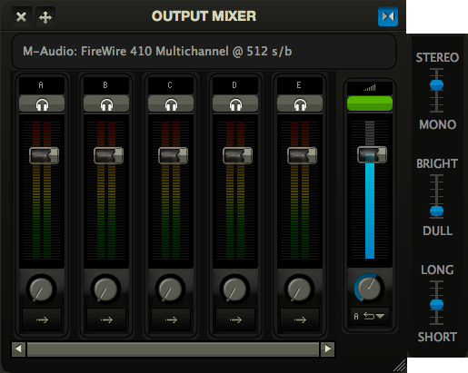
While in Edit mode, you will see a 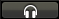button above each channel strip. Clicking on one of these will send a sine-wave test signal to that port, allowing you to check the audio routing of your audio device without having someone play RMS Keyboards® constantly. You should use this feature as part of your daily pre-show sound check to confirm your signal chain.
The small green window above the master fader will show you the maximum number of voices that have been triggered at any given time. RMS Keyboards® has a 128 voice polyphony limit, and going over that number will cause the window to turn red. Clicking on that window will reset the counter to 0. Don’t worry: it would take bombastic performances by many pianists to play 128 notes at once. But in the unlikely event that you run into polyphony issues, this gauge will help you isolate where you might need to adjust your playing style.
Relabeling Outputs
If you are using a multi channel setup and would like to specify the outputs by something other than just "A", "B", and so forth, that can be done via the Output Labeler found under the Tools menu.
Current Setup Window
When you play a show on a programmable synthesizer made by companies like Korg and Roland, you have access to a digital readout displaying the name of the current setup in an easily readable location. To get the same effect with RMS Keyboards®, you can choose to display a Current Setup window (Windows > Current setup). Space in orchestra pits is often at a premium, and this feature allows you to set the laptop off to the side or a few feet away while still giving you the most important information in an easily readable format, even at a distance.
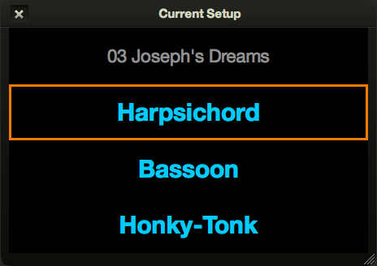
The order in which the setups appear, from top to bottom, will match the order of the keyboard books in the orchestration; for example, Keyboard 1 > Keyboard 2 > Pianosynth or Piano-conductor > Keyboard 2. The currently active instrument will have an orange border. If you click on the name of any instrument it will make that instrument active and bring the instrument window to the foreground, even if it is hidden. Is your Keyboard 3 player on SFZ Tuba instead of Sweet Strings? Click on the setup name and change it for him or her!
The current setup window can also be set to display only the Active Window, which is useful for single-user installations. This setting can be changed by going to Tools > Preferences... and choosing the "General" tab.
Comments Window
The Comments window (Windows > Comments) gives a plain-language instructions for specific setups. You might type "Mod-wheel controls vibrato," for example, or "Sound effect triggered on middle C."
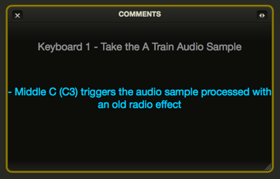
Some comments are built into the show file as a way to convey specific keyboard idiosyncrasies. But the feature is mainly there for you to store and display any information that will help you in rehearsal and/or performance.
To add a comment:
- If you're not already in Edit mode, switch to it (Mode > Switch to Edit mode).
- Select the setup you want to comment.
- Click the button.
- Type your comment text and click OK.
- Confirm that you've got the right song, keyboard, and setup, adjusting if necessary.
- Click Save.
You can delete a comment by highlighting it in the comment list and clicking the button.
A special aspect of the Comments window is that you can choose to display and hide comments automatically. If "Automatically display/hide comments" is checked in the Preferences/General tab, the window will display only when an applicable setup is activated. This can save valuable screen real estate.
MIDI Reset Button
Most modern synthesizers include a MIDI Reset button, and RMS Keyboards® does too, via Windows> MIDI Reset:
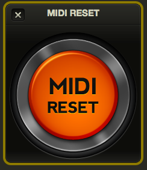
"Pressing" this button sends an "all notes off" signal to every instrument in the program in case you have any stuck notes. (If this happens, we suggest using a different MIDI controller the next time you run RMS Keyboards®.)
You can either click on the button with the mouse, or hit Command-m (OSX) or Ctrl-m (WINDOWS). The keyboard shortcut works even if the MIDI Reset button is hidden.